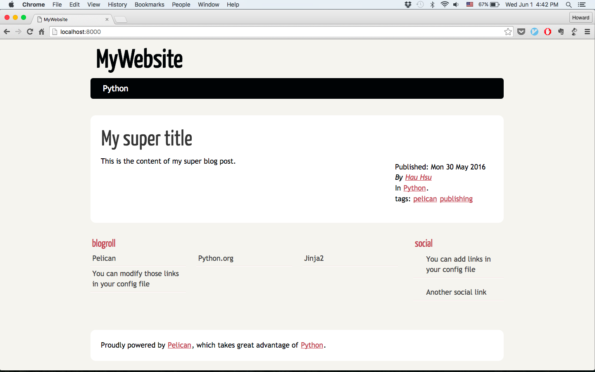
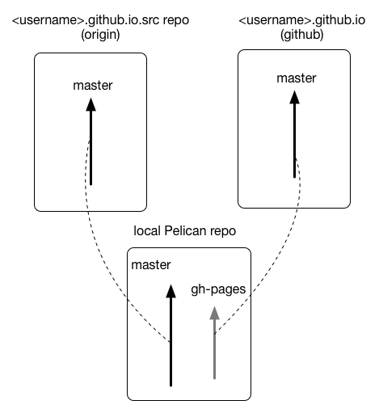

GitHub Pages 簡介
GitHub 有提供一個簡單的方法讓使用者架設個人網站 (User Pages) 或專案網站 (Project Pages)。
這篇主要是講個人網站的部分，其實也就是這個網站怎麼架的:p。
要使用 GitHub 的 User Page，首先要在 GitHub 上建立一個 repo，而且名稱必須是 \<username>.github.io。
我的帳號是hauhsu，所以 repo 名稱就是 hauhsu.github.io。
接著只要將靜態網頁放到這個 repo 的 master branch，就可以透過網址 http://\<username>.github.io 連到你的網站，所以這個網站的網址才會是 http://hauhsu.github.io。
Pelican 文件的說明...不太清楚
Pelican 產生出來的靜態網頁會放在 output 資料夾，所以只要把 output 內的東西放到你個人網站的 repo 的 master branch 就行了。 在 Pelican 的官方文件中，有一段是說明如何將產生出來的靜態網頁放上 Github pages。文件的做法是利用 ghp-import 這個小工具，他可以幫你把某個資料夾的內容更新到當本地端 repo 的 gh-pages branch。
$ pelican content -o output -s pelicanconf.py
$ ghp-import output
$ git push git@github.com:<username>/<username>.github.io.git gh-pages:master
上面的三個指令的作用分別是：
- 用 Pelican 產生靜態網頁並放到 output 資料夾
- 用 ghp-import 把 output 的檔案更新到 gh-pages 這個 branch
- 手動把 gh-pages push 到個人網站 repo 的 master branch
但是這邊沒有說本地端的 repo 是什麼，我有找到一篇教學是把 output 資料夾本身當成一個 submodule，不過我覺得 submodule 的操作太複雜，以下會介紹我覺得比較直覺而簡單的做法。
手把手一步步分解教學
建立 Pelican project
先在你想要建立專案的地方建立一個資料夾，我先假設你要建在家目錄下的 blog 資料夾：
$ mkdir ~/blog
$ cd ~/blog
$ pelican-quickstart
接著會有一個簡單的終端機互動介面，給你一些選項讓你設定。以下是我的輸入，有些資訊請記得根據自己的需要修改，中括弧內的字是預設的選項，如果我沒有打任何字就是直接按 enter 使用預設值：
Welcome to pelican-quickstart v3.6.3.
This script will help you create a new Pelican-based website.
Please answer the following questions so this script can generate the files
needed by Pelican.
> Where do you want to create your new web site? [.]
> What will be the title of this web site? MyWebsite
> Who will be the author of this web site? HauHsu
> What will be the default language of this web site? [en]
注意這邊要輸入你自己的 GitHub User Page 的網址
> Do you want to specify a URL prefix? e.g., http://example.com (Y/n) y
> What is your URL prefix? (see above example; no trailing slash) http://hauhsu.github.io
> Do you want to enable article pagination? (Y/n) y
> How many articles per page do you want? [10]
> What is your time zone? [Europe/Paris] Asia/Taipei
> Do you want to generate a Fabfile/Makefile to automate generation and publishing? (Y/n) y
> Do you want an auto-reload & simpleHTTP script to assist with theme and site development? (Y/n) y
> Do you want to upload your website using FTP? (y/N) n
> Do you want to upload your website using SSH? (y/N) n
> Do you want to upload your website using Dropbox? (y/N) n
> Do you want to upload your website using S3? (y/N) n
> Do you want to upload your website using Rackspace Cloud Files? (y/N) n
當問到你會不會用 GitHub Pages 的時候要選 y
> Do you want to upload your website using GitHub Pages? (y/N) y
> Is this your personal page (username.github.io)? (y/N) y
Done. Your new project is available at ~/blog
然後隨便 po 一篇文，也就是在 content 資料夾中建立一個文件叫 first_post.md ，並把以下的內容貼到裡面。
Title: My super title
Date: 2016-05-30 22:34
Category: Python
Tags: pelican, publishing
Slug: my-super-post
Author: Hau Hsu
Summary: Short version for index and feeds
Status: published
This is the content of my super blog post.
接著用 Pelican 給的 makefile 生出靜態網頁，並且開啟簡單的 http 伺服器讓你可以透過瀏覽器預覽結果：
$ make html && make serve
Done: Processed 1 article, 0 drafts, 0 pages and 0 hidden pages in 0.23 seconds.
cd /Users/howardxu/Test/pelican/output && python -m pelican.server
沒意外的話你可以在瀏覽器的網址列輸入：localhost:8000，就會看到你的網站。

要關掉 http server 可以回到終端機，按下 ctrl + c
建立 Pelican 專案的 repo
現在我們為這個 project 建立一個 repo，並且提交 pelican 專案中的檔案和第一篇文章的 markdown 檔：
$ git init
$ git add Makefile develop_server.sh *.py content/
$ git commit -m "first commit"
注意我們並沒有將 output 資料夾加入，因為那個資料夾每次用 Pelican 都會改變，並不是我們網站專案的 source。
在 GitHub 上建 repo
到 GitHub 網頁建立兩個 repo，一個是放 source 的，一個就是一開始提到的 GitHub 個人網站的 repo。個人網站的 repo 名稱是固定的，也就是 \<username>.github.io，而放 source 的 repo 我把它叫做 \<username>.github.io.src。
將 GitHub 的 repo 加入 Pelican project repo 的 remote
回到終端機，確認 working directory 是在剛剛建立的 blog 資料夾。接著要將我們的 Pelican repo 加入兩個 remote，一個是 origin，也就是我們的\<username>.github.io.src；另一個是 github，也就是我們個人網頁的 repo。
$ cd ~/blog
$ git remote add origin <username>.github.io.src
$ git remote add github <username>.github.io
發布文章到 GitHub User Page
現在我們可以照著 Pelican 文件的方法，將 output 的檔案上傳到 GitHub。由於我們已經將 GitHub User Page 的 repo 加入 remote，所以可以少打一些字：
$ ghp-import output
$ git push github gh-pages:master
還記得 ghp-import 會將 output 的資料更新至 gh-pages 的 branch（如果沒有這個 branch 則會自動幫你建立），所以我們只要把 gh-pages 的內容上傳到 github 的 master，就等於是把 output 資料夾的東西丟上去了！
現在用瀏覽器輸入你的個人網頁網址，也就是 http://\<username>.github.io，應該就會看到你的網頁有內容囉！
下面這張圖是各個 repo 之間的關係圖。方形匡起來的代表一個 repo；箭頭代表 branch；虛線代表 local 端的 branch 和 remote 端同步。

在 local 端會有兩個 branch：master & ph-pages，ph-pages 是 ghp-import 幫我們建的而且我們不必手動更新這個 branch，而是透過 ghp-impott output 這個指令更新。
上傳 source 的更新
如果想要在另一台電腦上寫文章和發布，兩台電腦的 Pelican project 必須同步，這時候就可以利用 $ git push origin 的指令，當然如果 GitHub 上有還沒有同步的內容，必須先 pull 下來、merge 以後再 push（基本的 git 操作）。
改寫 Makefile 讓發布文章更容易
Pelican 自動產生的 makefile 中有一個 github 的 target，這個是用在發佈 GitHub Project Page 的。現在因為我們是 User Page，所以我們來小小改寫一下，讓他符合我們的發佈動作。打開 Makefile 之後找到 github 這個 target：
github: publish
ghp-import -m "Generate Pelican site" -b $(GITHUB_PAGES_BRANCH) $(OUTPUTDIR)
git push origin $(GITHUB_PAGES_BRANCH)
把它改成：
github: publish
ghp-import -m "Generate Pelican site" output
git push github gh-pages:master
存檔。
之後要發布文章，就只要下 $ make github 就可以囉！